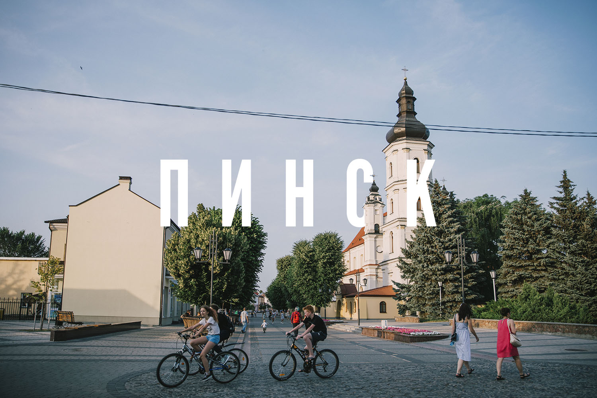
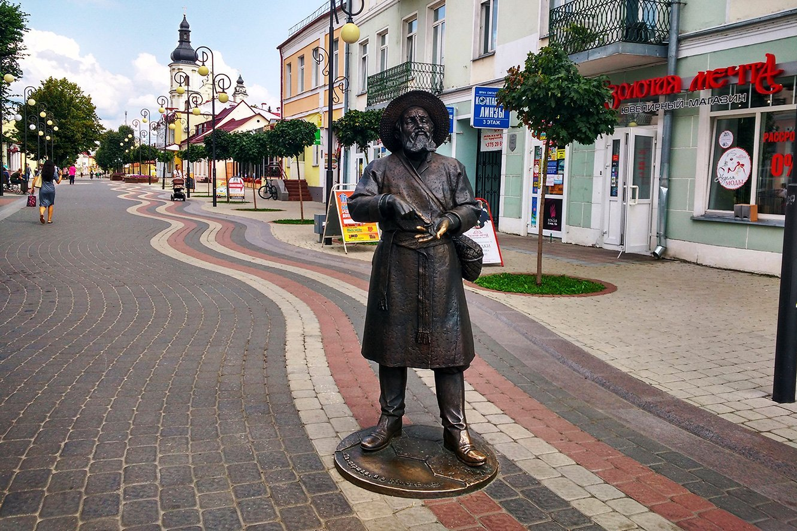

Многие говорят, что это лучший город Беларуси, и это правда так! Он сочетает в себе богатую историю, современные технологии и культурное наследие. Один из старейших городов Беларуси.
Пинск впервые упоминается в летописях в 1097 году. За свою многовековую историю он пережил войны, разрушения и возрождение. Сегодня это динамичный город с европейским обликом и Полесской душой.
Одним из главных символов Пинска является статуя Пинчука. Он загибает палец и говорит: "Па-першае, я з Пiнска"

Чтобы узнать больше нажмите *сюда*

Изображение: википедия
Сегодняшний Пинск — это гармоничное сочетание богатого прошлого и динамичного настоящего. Исторический центр с его отреставрированными улицами и набережной стал современным пространством с уютными кафе и гостиницами, где жизнь кипит днём и вечером. Город сохранил статус культурного сердца Полесья, где в стенах древнего Иезуитского коллегиума работает музей, а в уникальном деревянном драмтеатре идут спектакли. При этом Пинск не утратил свой аутентичный шарм и неспешный ритм, где ручная паромная переправа через реку остаётся таким же символом, как и величественные архитектурные памятники. Это город, который гордится своей историей и уверенно развивается, оставаясь одним из самых душевных и привлекательных мест Беларуси.
Именно эти парни — держат все районы города. Горожане их называют зелеными плащами. Под их защитой горожане чувствуют себя в безопасности.
Изображение: авторское фото